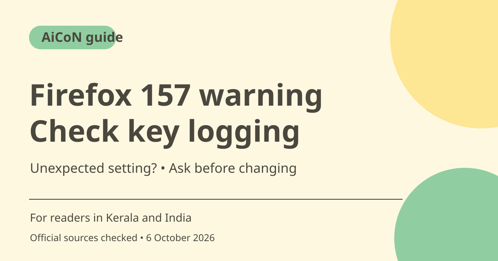

Firefox 157: what the encryption-key logging warning means
Firefox 157 warns when the browser is configured to record encryption keys that could let software on the computer read encrypted web traffic. The warning is not proof of an attack. If you did not arrange diagnostic logging, check the setup before using the browser for sensitive work.

What changed in Firefox 157?
Mozilla's release notes say version 157.0 reached release-channel users on September 29, 2026. Among the changes is a warning in the site-information shield panel and Settings when encryption-key recording is configured. The notes describe what the version supports; they do not establish that your device has already installed that version.
Why encryption-key logging matters
The release notes explain that recorded keys could allow other software on the computer to read encrypted web traffic. This is different from saying HTTPS has stopped working for everybody. It concerns a particular browser configuration. Diagnostic tools can have legitimate uses, but an unexpected setup deserves attention before you continue with banking or private account work.
If the warning appears
Note the warning text and whether this is a personal or managed device. If you knowingly enabled logging for troubleshooting, ask whether that diagnostic purpose is still needed. If you did not, check with the person or IT team responsible for the device. Do not follow instructions from a website or unsolicited caller to enable logging as a routine security fix.
What the warning does not prove
A warning alone does not identify who changed the setting or prove that anyone has read your traffic. Do not accuse another person or assume an account was compromised without further evidence. Equally, do not dismiss it because a page still shows HTTPS. Resolve the configuration and seek qualified help when you cannot explain it.
Other release features
The same Mozilla notes describe new light/dark themes and compact spacing for toolbars and tabs. They also list hardware AV1 decoding for WebRTC calls on supported devices. Hardware support matters, so do not promise improved video-call performance on every laptop or phone. These appearance and media changes are separate from the key-logging warning.
Update through the trusted route
Check your installed browser version through the browser's update/help route or a trusted package manager. Use Mozilla's official download route if needed, not a warning popup that offers a random installer. A browser update adds current fixes and features but does not by itself explain an unknown configuration or inspect the whole computer.
How to use it, step by step
- Read Mozilla's official Firefox 157 release notes and confirm the version actually installed on your device.
- Update through the browser's trusted update route or your organisation's managed software process.
- If the key-logging warning appears, record its wording and determine whether you intentionally enabled diagnostics.
- For a managed work device, ask IT about the setting before changing a required configuration.
- For an unexplained personal-device warning, pause sensitive browsing and obtain trusted technical help to review the setup.
- Do not enable logging because an unsolicited site or caller asks, and do not install a repair tool from an unverified popup.
- After the configuration is reviewed, confirm the warning state and keep the browser updated. Seek account-specific help if there is separate evidence of unauthorised activity.
Cost, eligibility and limits
| Firefox update | Use the official browser update/download route. No paid security agent is needed merely to obtain Firefox. |
|---|---|
| Warning scope | Configured encryption-key recording; not a verdict on every HTTPS connection or proof of an attacker. |
| Device policy | Check IT before changing a managed configuration. Diagnostic logging may be intentional. |
| Other features | Themes, compact mode and hardware AV1 decoding are version/device dependent. |
Frequently asked questions
Does the warning prove someone is spying?
No. It indicates a logging configuration; the cause and consequences need checking.
Can an update alone explain the setting?
No. Updating and investigating an unexpected configuration are separate tasks.
Should I alter my work browser immediately?
Ask the responsible IT team first if it is a managed device.
Official sources
Checked 6 October 2026. Features and prices can change. This is a guide, not a personal product test.